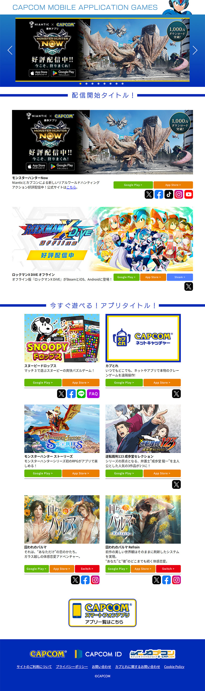
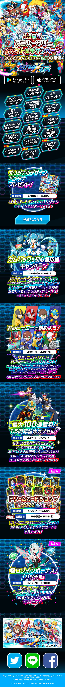

- ■プロトタイプ・B案
- 【案件概要・担当箇所】
QRコードを読み込んで表示されるサイトのプロトタイプ制作。
表示コンテンツ、機能などのUX設計、人物イラストのAI生成、レイアウトや色味などUIデザインを担当。figmaにて制作。 - 【要望】
商品についてのお問い合わせ、チャットボットへの接続を容易に、また販売サイトに誘導したい。 - 【制作意図】
要望にプラスして、販売促進につながりそうなUX設計を盛り込み提案した。 商品の特性上、清潔感があり、汎用性の高いデザインがマッチする為、グリッドレイアウトにし、サイト全体の色味は、商品に影響しない、落ち着いたものにした。 - 【作業規模】
デザイナー1名、ディレクター・1名、企画・プロデューサー2名、合計4名
2023年制作

- ■プロトタイプ・A案
- 【案件概要・担当箇所】などは■プロトタイプ・B案に同じ。
-
【制作意図】
商品の購買層に合わせた、別バージョンのビジュアルデザイン・コンテンツを提案

- ■ドラマ「OLにっぽん」 ウェブサイト
- 日テレ公式サイト。外国に仕事をアウトソーシングするストーリー。
-
【制作意図、担当箇所など】
国のイメージから赤をテーマカラーとし、黒をポイントで使うことでメリハリをつけた。 日本側と外国側の対立、というストーリーなので、勢いのあるビジュアルデザインにした。
サイト訪問時flashアニメーション、メニューのアイコン、スペシャルメニューアイコンのflashアニメーション、 背景の模様、テキストの色などデザイン提案・コーディングし、公開した。 - ※画像クリックで拡大します


- ■海外ドラマ「Dr.HOUSE」 ウェブサイト
- 日テレ公式サイト。診断医が患者や病気の謎を解くミステリー作品。
-
【制作意図、担当箇所など】
医療というテーマから、ホワイトと水色をメインカラーとし、クリーンかつ整然としたビジュアルにした。 背景をノートの罫線のイメージにし、知的さを付け加えた。心電図の波のイメージイラストを用いてアクセントとした。
画面レイアウト、背景イメージ、タイポグラフィなどデザイン提案・コーディングし、公開した。 - ※画像クリックで拡大します


- ■2007年参院選 ZERO × 選挙ウェブサイト
-
【制作意図、担当箇所など】
明るく、見やすく、 番組テーマカラーの黄緑を基調としてボタンなどの各パーツ、画面レイアウト、色味のデザイン・flashを提案・制作し、コーディング後、組み込み担当のプログラマ一に納品した。 - ※画像クリックで拡大します

- ■国立国会図書館・近代デジタルライブラリー ウェブサイト
-
【制作意図、担当箇所など】
近代の街並みのイラストを描き、シルエットにすることで、ノスタルジックさを演出した。書体も近代を想起させるようなレトロ調のものを選定。
画面レイアウト、色味、ロゴマーク、ロゴタイプ、ファーストビューの街並みのイラストを提案、hml、cssコーディングし公開した。3名のデザイナーでの社内コンペにて採用された。 - ※画像クリックで拡大します

- ■山梨県立博物館かいじあむウェブサイト
-
【制作意図、担当箇所など】
博物館ということでで子どもや多様な人々に向けたユニバーサルデザインの要望があったので、 わかりやすさ・見やすさを最優先しつつ、角丸や、ピンク系を使うことで、暖かみを演出し、ユーザーに親しみやすさをアピールするデザインを提案、htmlコーディングし公開した。 - ※画像クリックで拡大します

- ■滋賀県高島市 ウェブサイト
-
【制作意図、担当箇所など】
「水と緑人のいきかう高島市」というコピーから、水の綺麗さを印象付ける意図により、 ヘッダーに水の流れと魚のイメージイラストを制作・配置、また高島市の写真やコピーから受ける明るい印象を受け継ぎ、明るいサイトデザインを提案した。デザイン提案のみ。 - ※画像クリックで拡大します
- ■神奈川県海老名市 ウェブサイト
-
【制作意図、担当箇所など】
自治体のサイトであり、かつ文字数が多いので、なるべく早くほしい情報にたどり着けるよう、行間や文字の大きさに、行の長さを調整した。webデザイナー3名でHTML・CSSコーディングを分担。 - ※画像クリックで拡大します
- ■CAPCOM Mobile Application Gameウェブサイト
- 【案件概要・担当箇所】
新規サイトの立ち上げ、UIデザイン、組み込み、レスポンシブ対応。
レイアウトや色味などデザイン全般、バナー制作、ejs、sass、gitを使用したレスポンシブ対応サイトの構築を担当。 - 【要望】
更新が行いやすく、シンプルなデザインのサイト - 【制作意図】
閲覧者にサイト内容をアピールする意図により、ファーストビューにキャラクターとカルーセルバナーを配置、下部コンテンツをグリッドレイアウトにし、情報が見やすい整然としたデザインを提案。 - 【作業規模】
デザイナー1名、webディレクター1名、企画・プロデューサー1名、合計3名 - ※画像クリックで拡大します
pc版
sp版
- ■ロックマンX DiVE 1.5周年アニバーサリー ウェブサイト
- 【案件概要・担当箇所】
既存ページの内容更新によるデザイン変更。 背景のグラフィックや色味、キャラの配置やレイアウト、各コンテンツ、 バナー等のデザイン全般のリニューアル、sass、ejsを用い、gitを使用してのサイトの更新を担当。レスポンシブ対応。 - 【要望】
アニバーサリー感のあるページデザイン - 【制作意図】
アニバーサリー特設ページなので、華やかな雰囲気をコンセプトとし、 スクロール時のアニメーションもコミカルな動きとし、お祭り的な印象にした。 - 【作業規模】
デザイナー2名、webディレクター2名、企画・プロデューサー1名、合計4名 - ※画像クリックで拡大します
pc版
sp版
- ■カプコン ファイティング コレクション ウェブサイト
- 【案件概要・担当箇所】
新規ページのUIデザイン、組み込み、告知用バナー制作。 トップページファーストビューを他のデザイナーが制作、担当個所はトップページ下部コンテンツ、配下ページのデザイン・コーディング、 バナー等のデザイン全般。 組み込みはエンジニアが担当。レスポンシブ対応。 - 【作業規模】
デザイナー2名、webディレクター2名、企画・プロデューサー1名、合計4名 - ※画像クリックで拡大します


{kind=link}
{kind=link}
{kind=link}
{kind=link}
{kind=link}
{kind=link}
{kind=link}